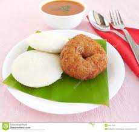

Idly Vade

Description
Idlis are round cakes made from a batter of steamed rice and fermented black lentil.
Sometimes, fenugreek is added to the batter to give it flavour.
Idlis are a popular, sort-of-staple food in the South Indian states.
Vada is a savoury, fried snack.
To many, it may look like a fried version of doughnuts.
for masala paste:
- 1 tsp oil
- 1 tbsp chana dal
- ½ tbsp urad dal
- 1 tbsp coriander seeds
- ½ tbsp cumin
- ¼ tsp methi
- ½ tsp pepper
- 5 dried red chilli
- few curry leaves
- ¼ cup coconut (grated)
- ½ cup water
for pressure cooking dal:
- ¼ cup toor dal
- ¼ cup moong dal
- ¼ tsp turmeric
- 1 tsp oil
- 1½ cup water
for sambar:
- 2 tbsp oil
- 1 tsp mustard
- ½ tsp urad dal
- 1 dried red chilli
- pinch hing
- few curry leaves
- 8 shallots
- ½ carrot (cubed)
- 5 beans (chopped)
- 10 piece drumstick
- ½ tomato (cubed)
- ¼ tsp turmeric
- 1 tsp salt
- ½ cup tamarind extract
- ½ tsp jaggery
- water
- 2 tbsp coriander (finely chopped)
Steps
- firstly, in a heavy-bottomed pan heat 1 tsp oil. add 1 tbsp chana dal, ½ tbsp urad dal, 1 tbsp coriander seeds, ½ tbsp cumin, ¼ tsp methi and ½ tsp pepper.
roast on low flame until the spices turn aromatic.
- add 5 dried red chilli, a few curry leaves and roast until the chills turn. crisp.
- further, add ¼ cup coconut and roast on low flame.
- roast until the coconut turns golden brown.
cool completely, and transfer to the mixer jar.
- add ½ cup water and grind to a smooth paste. keep aside.